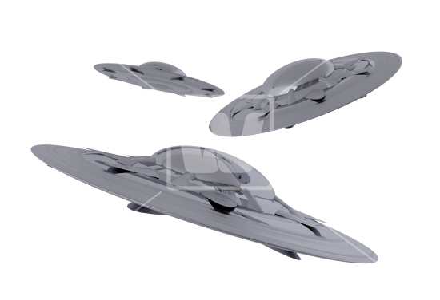
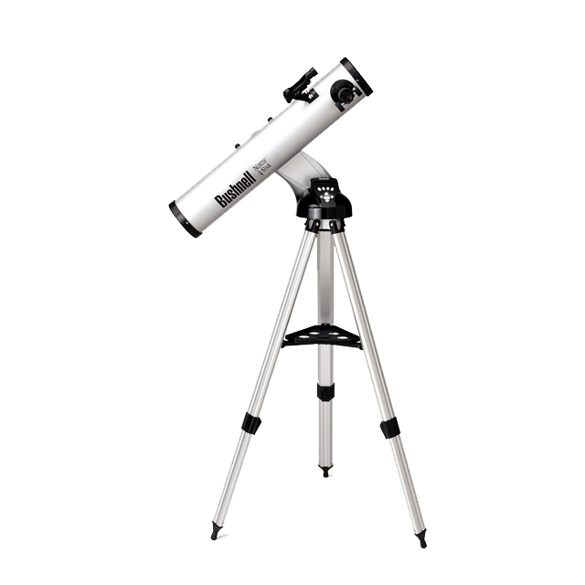
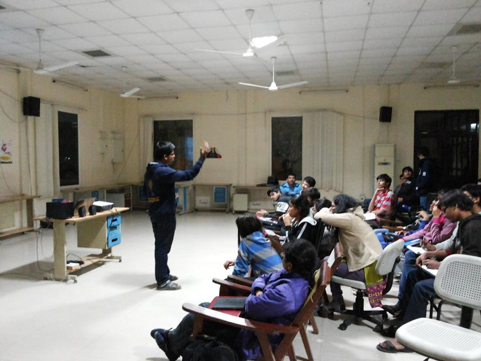
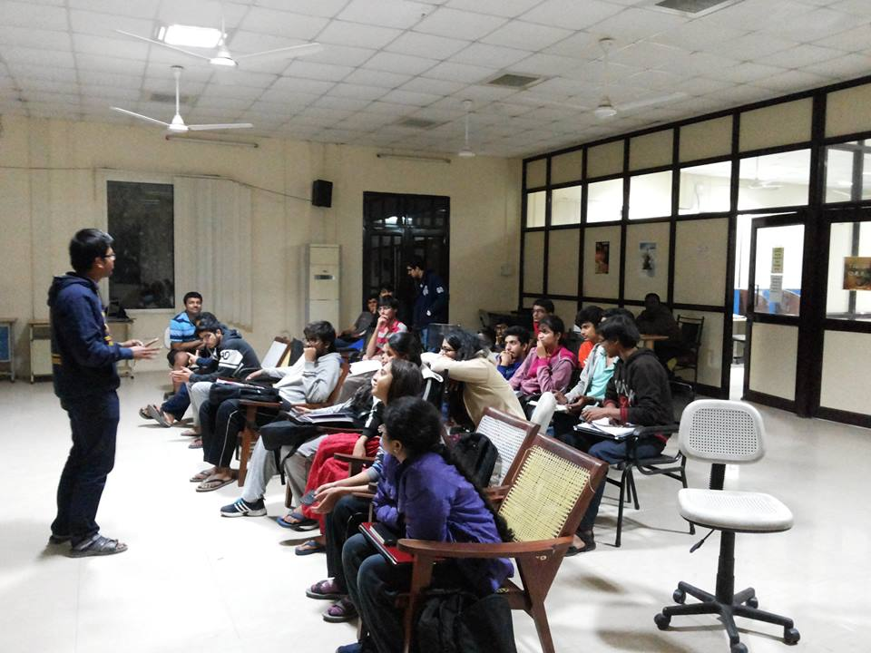
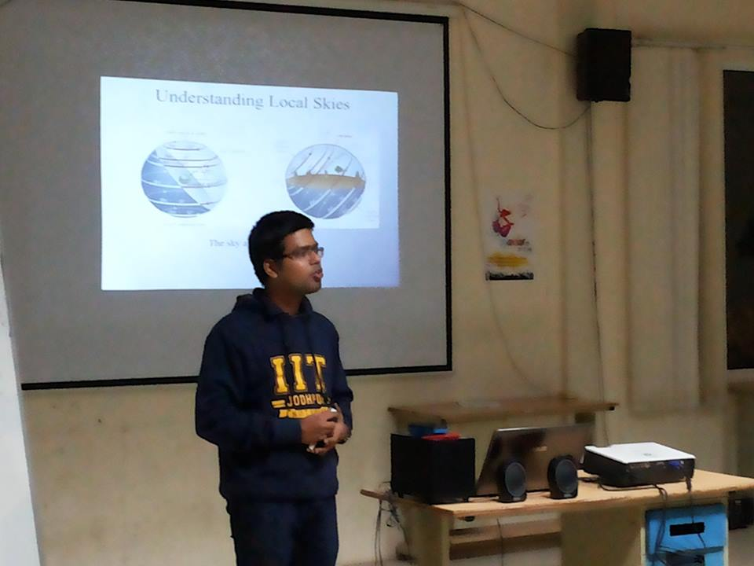
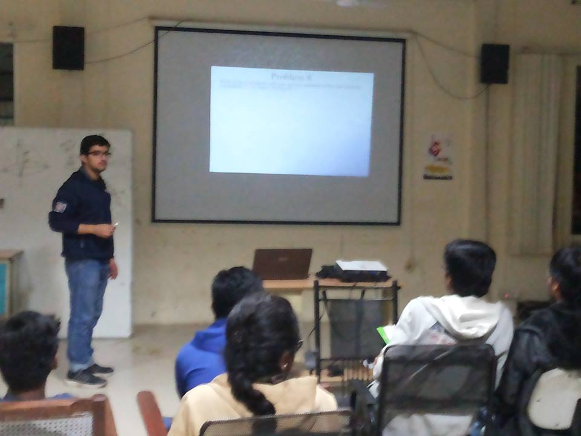
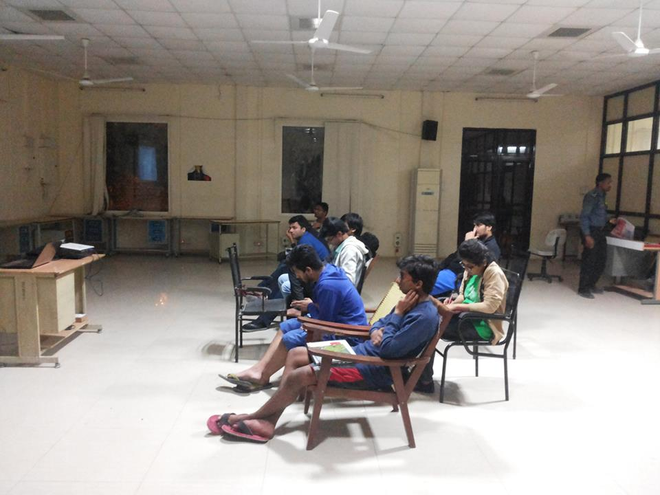
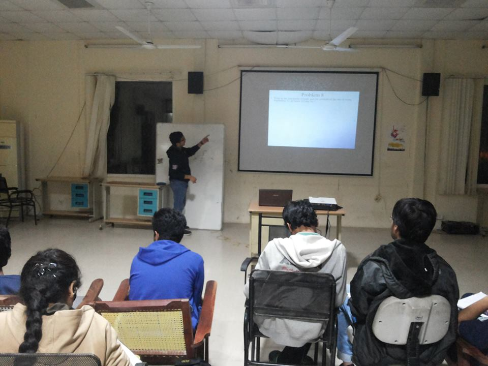
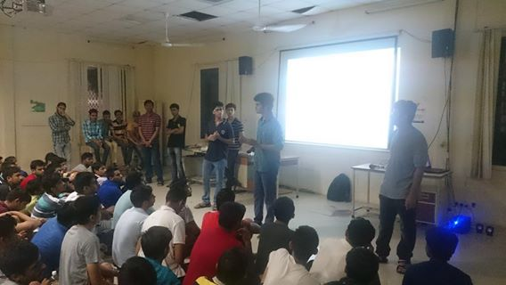
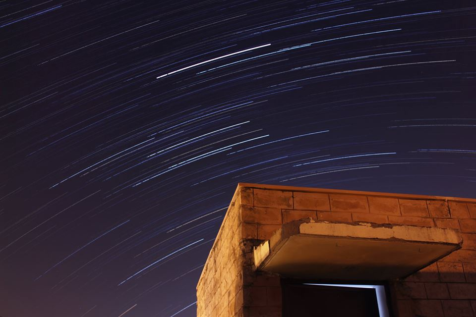

Overview
WE read and think about various aspects of cosmos and its theories and expand our knowledge.WE keep discussion sessions where we discuss about things we have read and thus share knowledge.
WE keep lectures on the topics such as theory of relativity, blackhole, how to start with Amateur astronomy, etc.
We try to spot all the messier objects.
WE compete in Inter-IIT Tech meet which has competitions related to astronomy.
Events
Star Wars
A quiz based on Astronomy. Questions shall deal with basic mathematics, physics and astronomy. Level of questions will be not very advanced, but shall be such that a hobbyist or amateur can easily answer them.Messier Hunt
You will be given a list of Deep Space Objects (Messiers) of varying difficulty and you have to point the telescope at exactly each one of them in minimum time interval.

Extra-Terrestrial
Do aliens exist? How do they look like? Are they more intelligent than us? If they exist then where are they? Such questions are still unanswered but we can imagine how will they look or behave like, so let us run our imagination and create our very own life form.Acheivement
We have successfully secured 3rd position in Inter IIT tech meet held in 2014.

Winter Camps
We also keep Astronomy Winter Camp wherein we focus on training ourselves for the Inter IIT tech meet.BK MAK90 EQ1 (SkyWatcher)
The Sky-Watcher Maksutov-Cassegrains are the ultimate take-anywhere telescopes. They are also ideal if working space is limited. Despite their small dimensions they pack a powerful punch. Their High-Resolution, diffraction limited optical systems are multi-coated to maximize contrast and image sharpness.
This Sky-Watcher Maksutov comes in apertures of 90mm, and is available either complete with equatorial mounts and tripods, or as tube assemblies only, which can be mounted onto a standard photographic tripod. Whether your requirement is for terrestrial or astronomical use, these compact scopes are the perfect companion
This Sky-Watcher Maksutov comes in apertures of 90mm, and is available either complete with equatorial mounts and tripods, or as tube assemblies only, which can be mounted onto a standard photographic tripod. Whether your requirement is for terrestrial or astronomical use, these compact scopes are the perfect companion
Sky-Watcher 8" f/5.9 Dobsonian Telescope
The large 8" aperture draws in copious amounts of light to make detailed observations of the Moon and planets, and still reach out past our solar system to discover dim deep-sky subjects. Its f/5.9 focal ratio and Crayford focuser makes this an ideal choice for imaging. Its relatively fast focal ratio enables devices to capture images in less time than slower scopes, while the unique focusing mechanism employed in the Crayford-style gives it the ability to achieve tack-sharp focusing with zero back-lash that rack-and-pinion focusers generally are unable to.
ASTROMASTER 130EQ TELESCOPE
Quick and easy no-tool setup
Permanently mounted StarPointer
Erect image optics - Ideal for terrestrial use
Quick release dovetail attachment - no tool setup
German Equatorial mount with Setting circles - to accurately locate and track sky objects
Rugged pre-assembled tripod with 1.25" steel tube legs - Provides a rigid and stable platform
All coated glass optics for clear, crisp images
Permanently mounted StarPointer
Erect image optics - Ideal for terrestrial use
Quick release dovetail attachment - no tool setup
German Equatorial mount with Setting circles - to accurately locate and track sky objects
Rugged pre-assembled tripod with 1.25" steel tube legs - Provides a rigid and stable platform
All coated glass optics for clear, crisp images









